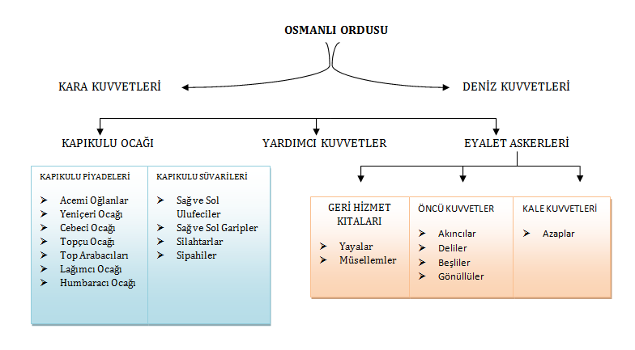

Osmanlı ordu teşkilatı, Anadolu Selçukluları, İlhanlılar ve Memlüklüler devletlerinin ve Roma İmparatorluğunun askeri teşkilat yapılarından belirli ölçülerde yararlanılarak kurulmuştur. Devletin temeli atılırken süvari olan beylik kuvvetlerinin yerine Vezir Alaâddin Paşa ile Kadı Cendereli Kara Halil'in tavsiyeleriyle Türk gençlerinden oluşan ayrı ayrı biner kişilik yaya ve müsellem isimleriyle muvazzaf iki sınıf piyade ve süvari kuvveti kuruldu.
Piyadeleri "yaya”, süvarileri ise "müsellem” şeklinde adlandırılmıştı. Kapıkulu Ocakları'nın kuruluşuna kadar savaşlarda fiili olarak hizmet görmüşlerdir. Osmanlı Devleti’nin beylik devlet siyasetinden imparatorluk siyasetine geçişi imparatorluk içinde bağımsız güç bırakmak istemeyen, merkezi otoriteyi devşirme ,kapıkulu, yeniçeri ve enderun sistemiyle sağlamlaştırmak isteyen II. Mehmet ile başlamıştır.